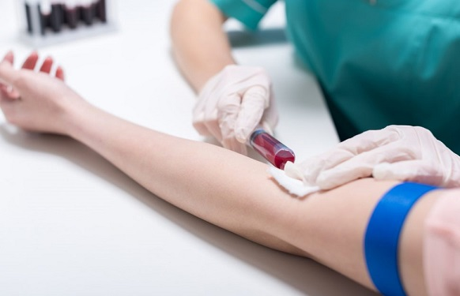

Какво представляват наркотиците?
Наркотични вещества (наркотици) са група фармакологични вещества, които действат предимно върху централната нервна система и при внасяне в организма предизвикват ступор, който може да се чувства като успокоение или наркотичен сън. Терминът наркотик се смята, че идва от гръцкия лекар Гален и се отнася към вещества, които притъпяват сетивата и усещанията и/или произвеждат състояние на вцепененост, скованост или лека парализа. Гален отбелязва корена от мандрагора и опиума като основни представители на наркотичните вещества.
Произход
Алкалоидите са били познати на човечеството още от древостта. Части от растения или техни водни извлеци са били използвани в медицината и при религиозни и магически риуали. Изследванията от химична точка датират от началото на 19 век.
Химичен състав
Алкалоидите са сравнително малка група азотсъдържащи хетероциклени органични съединения. Те съдържат поне един азотен атом, включен в затворена въглеродна верига (пръстен). Пръстенът може да бъде от пет или шест въглеродни атома, но се срещат такива и с по-сложно устройство. Особеностите на азотният атом придават спезифични свойства на пръстена. Той определя основните свойства на съединенията, в които се намира. Алкалоидите имат основни свойства, откъдето идва името им, и оптична активност.
Разпространение
Алкалоидите се срещат в много растителни видове. Установено е, че се синтезират от растенията без да имат функционално значение. Възможно е да слуат за защита от вредители. Това донякъде обяснява защо има алкалоиди само в опеделени части на растението и в опредерен географски регион. Концентрацията на алкалоиди варира между 0,1% и 20%.
Ефекти
Ефектите на наркотичните вещества зависят от дозата, начина, по който влизат в човешкото тяло, а също и очакванията на консумиращия ги. Отделно от тяхната клинична употреба за лечение на болка, кашлица или остра диария, наркотичните вещества имат свойството да произвеждат състояния на блаженство и еуфория, а също да редуцират агресия и тревожност. Последното води до широката им употреба като развлекателни дроги и свойството да произвежда зависимост у някои от ползващите ги.
Рискове
Вследствие на немарлива, невнимателна или прекомерна употреба на наркотични вещества може да се увеличи рискът от инфекции и болести, или да се стигне до предозиране и смърт. Тези наркотични препарати могат да се отпуснат само чрез жълта рецепта.
Статистика
През 2012 г. в България умират 24 души от свръхдоза наркотици, което е 4,8 души на милион население. Средното за Европейския съюз, Норвегия и Турция е 17,1. Почти 25% от населението на Европейския съюз, Норвегия и Турция е ползвало наркотици някога през живота си, като най-често използваният нелегален наркотик е кокаинът, а в България – екстази.
На територията на Европейския съюз, Норвегия и Турция през 2012 г. са заловени:
• 4977 kg хероин, от които 285 kg в България;
• 71 540 kg кокаин, от които 115 kg в България.
В България
През 2008 г. в България 74 души умират от свръхдоза, но към 2015 г. смъртните случаи са спаднали на 17. Повечето смъртни случаи са на хора на възраст между 30 и 39 г., като в 88% от случаите това са мъже. Мнозинството от наркоманите, постъпващи на лечение, са пристрастени към опиоиди и се лекуват основно чрез метадонова терапия.
През 2015 г. са конфискувани 1176 kg канабис, 265 kg хероин, 43 kg амфетамини и 30 kg метамфетамини. Средната чистота на хероина е 65%, на амфетамините – 70%, а на кокаина – 75,5%.
Употребата на канабиса сред младите (15 – 34 г.) към 2015 г. е 8,3%, а на MDMA – 2,9%.
Наркотиците в България
В българския политически и юридически контекст терминът наркотик обхваща широк кръг от най-различни субстанции, чието използване или притежаване е или напълно криминализирано, или строго регулирано. В този смисъл понятието включва и вещества, които не са наркотици от фармакологична гледна точка, тъй като не предизвикват наркоза, например стимулантите. Такива са редица растителни вещества и техни производни като тютюн (нерегулиран), алкохол (нерегулиран), канабис, кокаин, опиум и негови деривати, между които пантопон, морфин, хероин, кодеин, а също и други препарати, употребявани в медицината, като сънотворните средства (веронал, луминал, барбамил и други производни на барбитуровата киселина).
Противно на тази законова практика и на популярните митове обаче, много от тези съставки технически не са наркотици. Така например канабис, ЛСД и други психеделични дроги химически не принадлежат към групата на наркотиците и техните ефекти са различни. Също така, всички стероиди не спадат към наркотичните вещества.
Заради политиката на преследване и „война срещу наркотиците“ и създадения от редица официални лица негативен образ на термина „наркотик“, медици започват да използват по-прецизното определение „опиоиден аналгетик“, за наркотичните вещества, които имат свойства, подобни на морфин.
